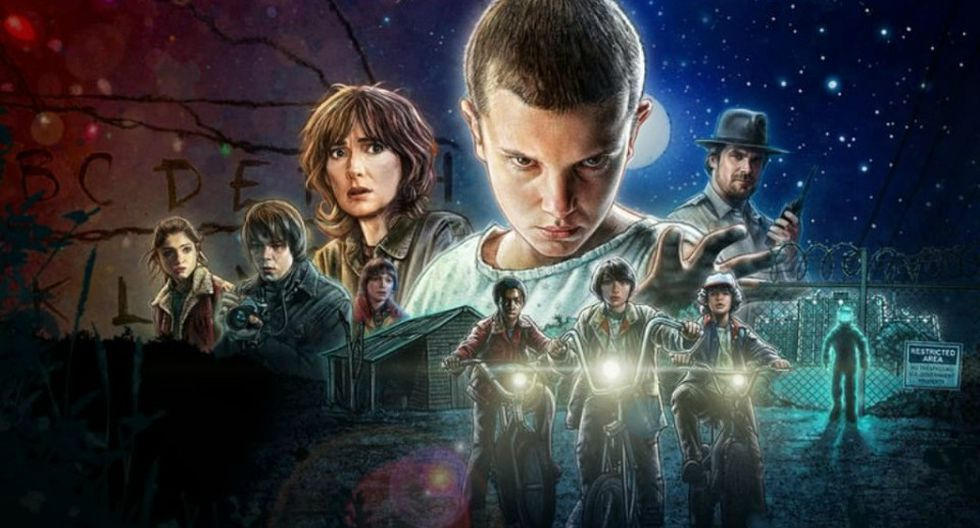
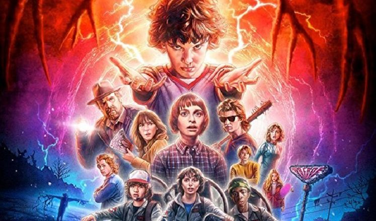
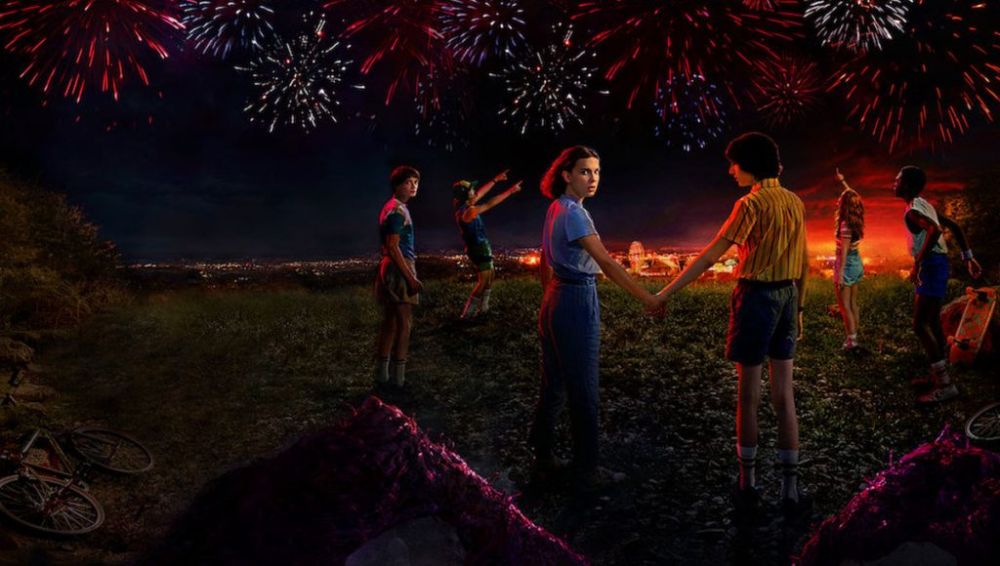
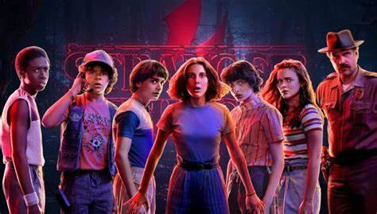
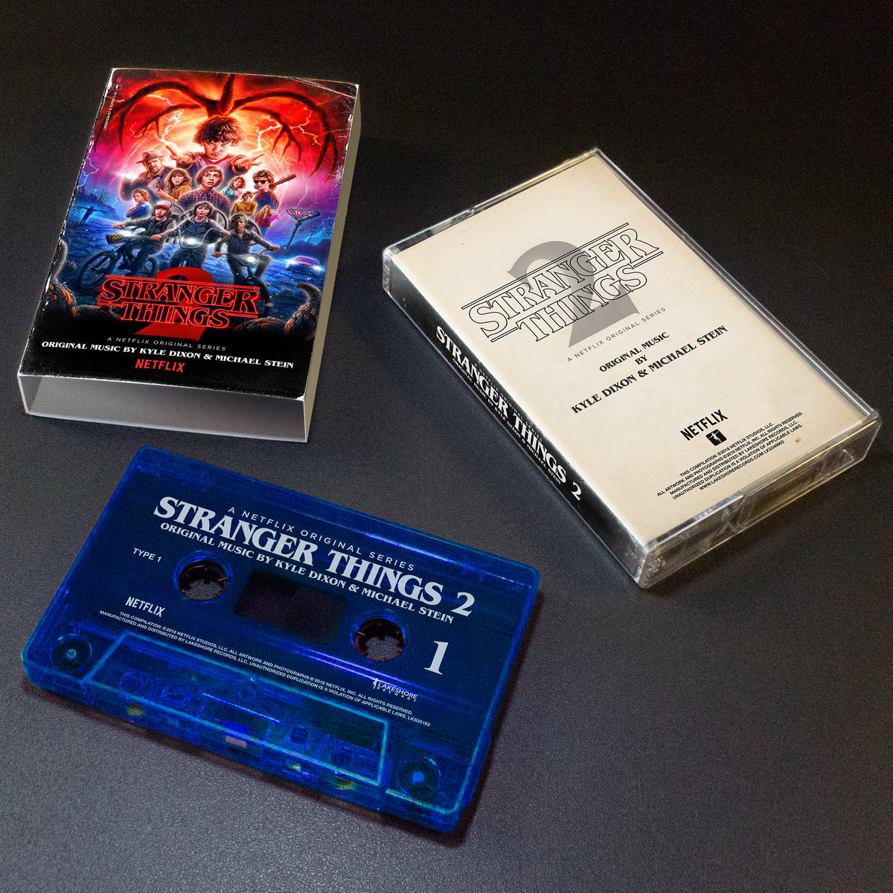
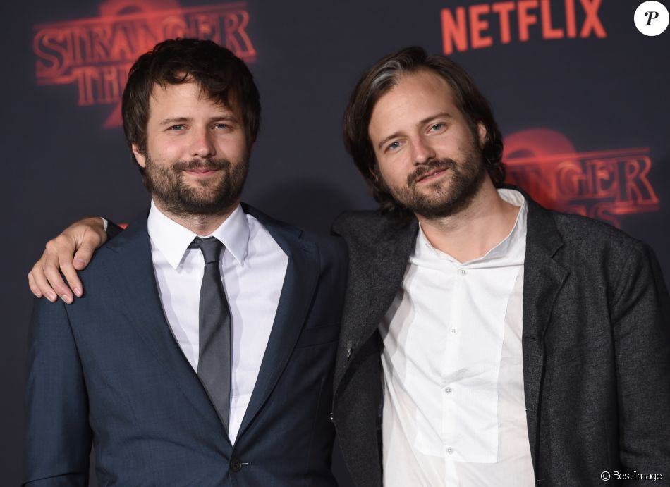
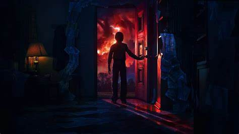

Passada na década de 80, na cidade fictícia de Hawkings, Stranger Things conta a história de um garoto que desaparece e dos eventos paranormais que se passam em torno desse acontecimento. Os personagens principais são seu grupo de amigos que acaba fazendo amizade com uma menina fugida de um laboratório e com poderes psicocinéticos.

1° temporada
Passada em 1983, a primeira temporada de Stranger Things introduz Eleven, uma garota com poderes psicocinéticos que escapa de um laboratório ao mesmo tempo que um monstro do Mundo Invertido rapta Will. A garota acaba se juntando aos amigos de Will para o ajudar a voltar a sua dimensão.

2° temporada
No Halloween de 1984, um dos monstros principais do Mundo Invertido ameaça aterrorizar os cidadãos de Hawkins. O grupo de amigos se junta então para impedir que isso aconteça.

3° temporada
No verão de 1985, o grupo de amigos tenta sobreviver aos romances que nascem entre si, enquanto se apercebem de que o mal continua à espreita.

4° temporada
A quarta temporada de Stranger Things deve estrear em 2022. A sinopse divulgada pela Netflix informa: "Nem tudo são boas notícias para o nosso 'americano'; ele está preso longe de casa, no deserto nevado de Kamchatka, onde enfrentará perigos tanto humanos… quanto outros."

Trilha sonora
A trilha sonora que acompanha a série tem sido alvo de grande amor por parte do público. Isso se deve ao uso de músicas de grandes bandas dos anos 80 como The Clash, Joy Division, New Order, The Bangles, Echo and the Bunnymen, entre outros.
Além disso, em todas as músicas originais são usados sintetizadores como homenagem aos sons dessa década.
Inspirada em história real?
Matt e Ross Duffer, criadores da série Stranger Things (2016), falaram à Rolling Stone EUA sobre a possibilidade de elementos do hit da Netflix serem baseados em histórias reais. A entrevista ocorreu em 2016, após o sucesso da primeira temporada do show.
Matt comentou sobre o desejo de misturar fantasia e realidade: “Queríamos que o elemento sobrenatural fosse baseado na ciência. Por mais ridículo, o monstro [na dimensão alternativa] não vem de algo espiritual e não está ligado a nenhuma religião. Isso torna tudo mais assustador. Não acredito em fantasmas, mas acredito em alienígenas e dimensões alternativas.”
Os irmãos se inspiraram em "experimentos bizarros que ocorreram na Guerra Fria," especificamente o Projeto MKUltra. O programa, desenvolvido pela CIA em 1953, buscava desenvolver técnicas de controle mental para dar vantagem aos Estados Unidos na batalha.
Em Stranger Things, a mãe de Eleven (Millie Bobby Brown) é cobaia, durante a gravidez, do MKUltra. O uso de LSD e as experiências realizadas com ela inconsciente justificam a garota nascer com poderes e dons psíquicos.
